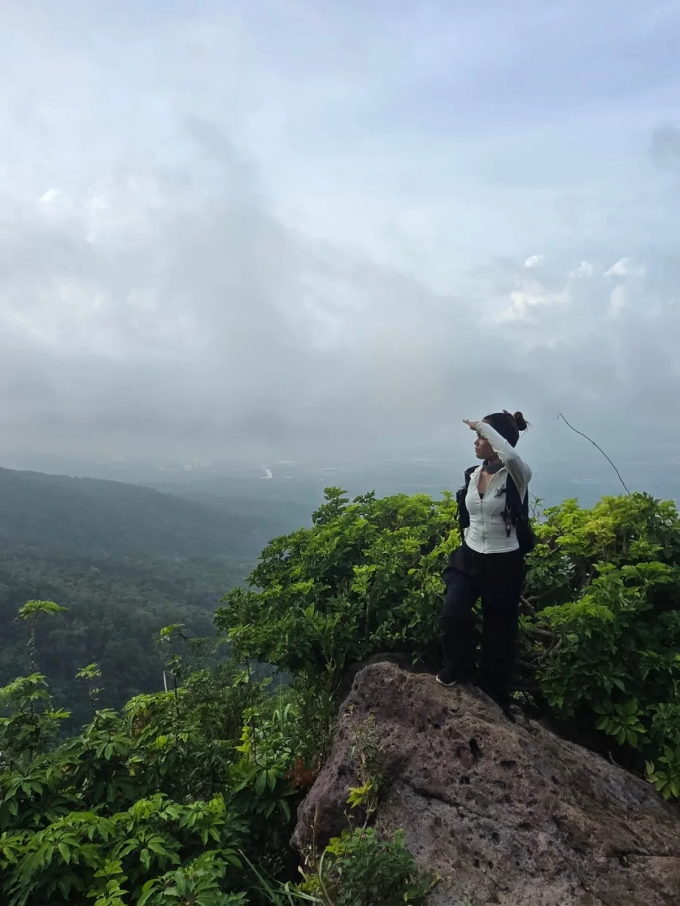

Star's Profile Cards
Three distinct styles designed for the Mt. Makiling traverse journal.

Star
@stardwellerA designer and outdoor explorer who lives for alpine ridges, mossy forests, and running down mountain slopes. Always seeking the next wild trail and a warm brew.
Peak Elevation
1,109m
Peaks Climbed
32 scaled
Favorite Traverse
Mt. Makiling
Trail Entry — May 31
"No clearing, no problem. Makiling was still pure magic. The descent was an absolute blast because we ended up trail running most of it."
EXPLORER STATUS: ACTIVE

Star
@stardwellerA designer and outdoor explorer who lives for alpine ridges, mossy forests, and running down mountain slopes. Always seeking the next wild trail and a warm brew.
Peak Elevation
1,109m
Peaks Climbed
32 scaled
Favorite Traverse
Mt. Makiling

Star — 2026
Star
@stardwellerA designer and outdoor explorer who lives for alpine ridges, mossy forests, and running down mountain slopes. Always seeking the next wild trail and a warm brew.
☑
Mt. Makiling Traverse
☑
Scale elevation: 1,109m
☑
Count: 32 scaled